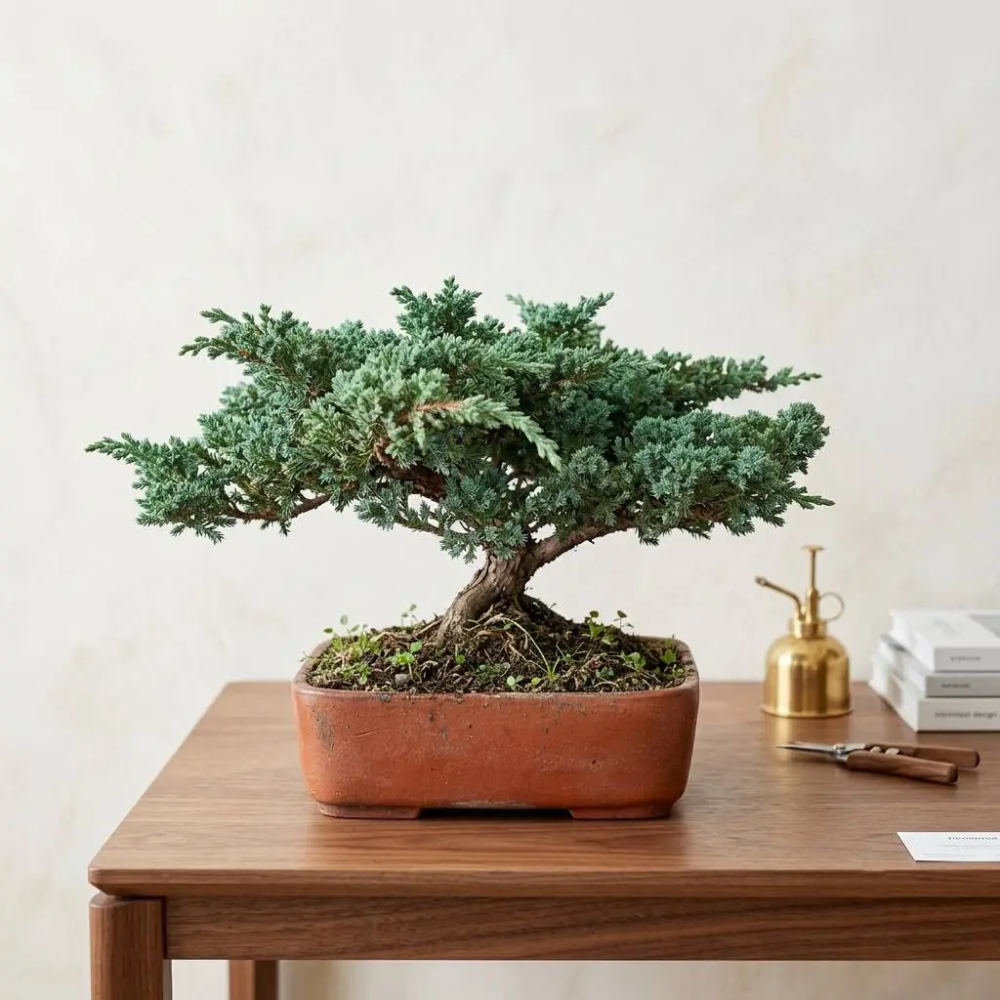

Test de bonsáis · DecoGarden
Encuentra el bonsái perfecto para ti
Responde unas preguntas y descubre 3 bonsáis que combinan con tu espacio, tu tiempo y tu presupuesto.
Tienes un test a medias.
Solo toma 1 minuto
- Sin registrarte ni dejar tus datos
- Solo te recomendamos bonsáis que pueden vivir en tu espacio
- Cultivados en San Antonio de Ibarra
Buscando los bonsáis que mejor van contigo…
No pudimos cargar el test
Puede ser la conexión. Prueba otra vez o escríbenos y te ayudamos a elegir por WhatsApp.